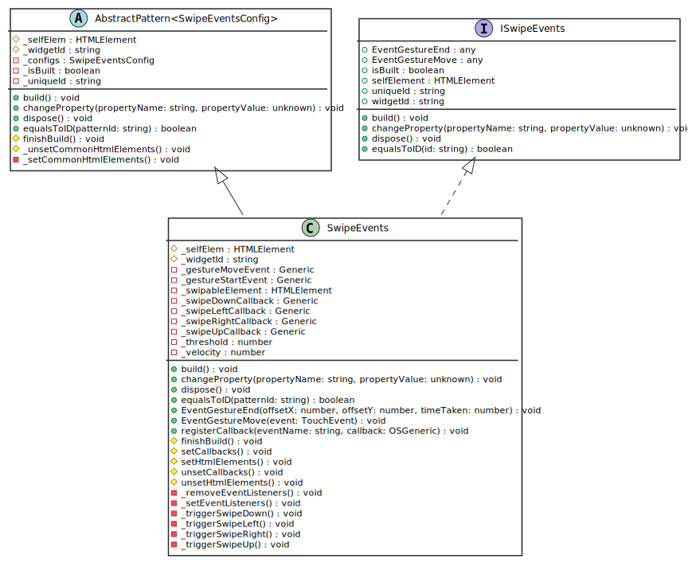

Class SwipeEvents
Hierarchy-Diagram
{kind=link}
Legend
 class
class
 abstract class
abstract class
 interface
interface
 public property
public property
 protected property
protected property
 private property
private property
 public method
public method
 protected method
protected method
 private method
private method
Hierarchy
- AbstractPattern<SwipeEventsConfig>
- SwipeEvents
Implements
Index
Properties
Accessors
Methods
Constructors
Properties
Protected _self
_self
Reference for the base HTML of the element of this pattern;
Memberof
AbstractPattern
Protected _widget
_widget
Id of the widget. This will be the Id that the developer will be using in runtime.
Memberof
AbstractPattern
Private _gesture
Private _gesture
Private _swipable
_swipable
Private _swipe
Private _swipe
Private _swipe
Private _swipe
Private _threshold
_threshold: number
Private _velocity
_velocity: number
Accessors
Protected _enable
- get _enableAccessibility(): boolean
ProtectedGetter that allows to obtain the accessibility is enabled.
Memberof
AbstractPattern
Returns boolean
self
- get selfElement(): HTMLElement
ProtectedGetter that allows to obtain the self element.
Memberof
AbstractPattern
Returns HTMLElement
is
- get isBuilt(): boolean
-
Getter that tells if the pattern is already built.
Memberof
AbstractPattern
Returns boolean
configs
- get configs(): C
-
Current configurations/state of the pattern.
Memberof
AbstractPattern
Returns C
unique
- get uniqueId(): string
-
Unique id of the pattern. Internal use only.
Memberof
AbstractPattern
Returns string
widget
- get widgetId(): string
-
Id of the pattern known by the developer. External use only.
Memberof
AbstractPattern
Returns string
Methods
Protected finish
change
equals
Private _remove
Private _set
Private _trigger
Private _trigger
Private _trigger
Private _trigger
Protected set
Protected set
Protected unset
Protected unset
Event
Event
build
dispose
register
Constructors
constructor
- new
Swipe Events(uniqueId: string, configs: JSON): SwipeEvents -
Parameters
-
uniqueId: string
-
configs: JSON
Returns SwipeEvents
-
Defines the interface for OutSystemsUI Patterns